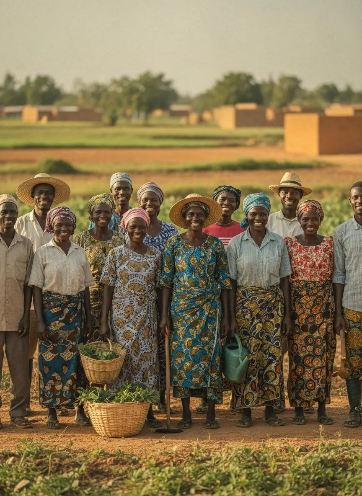
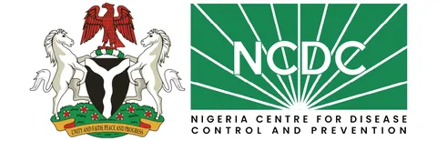
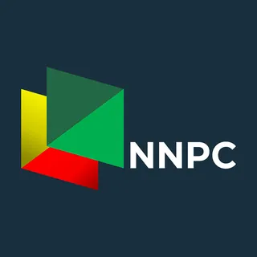

A Nigerian company established in 2019, building a broader platform across agribusiness, agro-industrial development, agricultural trade and investment advisory.
Misalta Global Concepts Ltd. is a Nigerian company established in 2019. It has provided professional services and is developing a broader business platform spanning climate-focused agribusiness, agro-industrial development, agricultural trade, and investment advisory.
The company's evolving strategy is to connect service delivery, productive infrastructure, commodity value chains, and market access to create practical opportunities for businesses and agricultural stakeholders.

To deliver professional services and develop practical, sustainable solutions that strengthen agricultural value chains, productive enterprise, and market access.
To build an integrated Nigerian platform connecting agricultural production, processing, trade, and investment.
The principles behind every service we deliver and every venture we build.
We do what we commit to, and we own the outcome.
New ideas matter when they work on the ground.
Value that lasts for farmers, communities and partners.
We build with clients, investors and communities, not around them.
We grow at a pace we can stand behind, and we say what is planned and what is live.
Partner with us to build productive agricultural value chains.
Invest & PartnerMisalta Global Concepts Ltd. begins as a professional services company.
Training, facility management and procurement support delivered to leading organisations in Nigeria, including NNPCL and NCDC.
Planned ventures in agro-processing, agricultural infrastructure and digital commodity trading.
Agro-processing in Taraba State, an agro-hub network, and the upcoming Misalta Trade X platform. These are planned or in development.
Misalta Global Concepts Ltd. has delivered training services, facility management, and procurement support to leading organisations in Nigeria, including NNPCL and NCDC. This experience is the foundation for our expansion into agricultural value addition, agro-industrial development, commodity trading, and investment advisory.


Today, all of these services are delivered under Misalta Consulting.
Explore Misalta ConsultingA founder-led group with a board, directors and advisers overseeing every business.
Board leadership, governance oversight and strategic direction for the group.
The directorate that runs finance, operations, agro-processing, trade and strategy across the group.
Financial, agricultural and legal advisers guiding compliance, value-chain and investment decisions.
Every message is read by the team behind Misalta.